Рецепт шоколадной мастики не потребует от вас глубоких кондитерских знаний. Приготовить стильный декор для тортика, маффина, пряника или капкейка под силу даже новичку. Все что нужно в этом деле – терпение, любимая разновидность шоколада и немножко фантазии. Поверьте, создать притягательную торжественную выпечку – просто.
Особенности мастики из шоколада
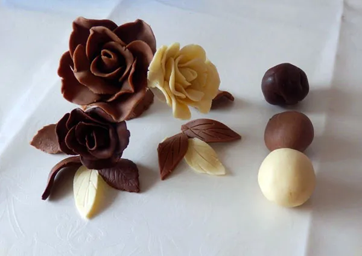
В отличие от желатиновой и сахарной мастики, шоколадная:
- имеет более утонченный вкус;
- обладает изысканным ароматом;
- позволяет добиться красивых коричневых или кремовых оттенков.
Эта паста упругая и пластичная, что позволяет ловко манипулировать мельчайшими деталями фигурок, изготавливаемых из нее, и аккуратно прорабатывать украшение. Даже самые смелые творения кондитеров не опадут при транспортировке эксклюзивного десерта, а будут держать форму до его подачи на стол.
Как видите, шоколадная мастика домашнего приготовления имеет массу преимуществ, годится и для лепки, и для обтягивания тортов. Главный ее недостаток, по мнению неисправимых лакомок, заключается в том, что она очень вкусная.
Маршмеллоу и шоколад
Шоколадная мастика из маршмеллоу – самая удачная и не требующая больших трудозатрат разновидность. Для нее понадобятся:
- шоколад (chocolate): молочный, белый или черный – 100 гр.;
- хорошо просеянная сахарная пудра – 200 гр.;
- marshmallows – 150 гр.;
- немного воды – 3 чайных ложки;
- сливочное масло – 1 чайная ложка.
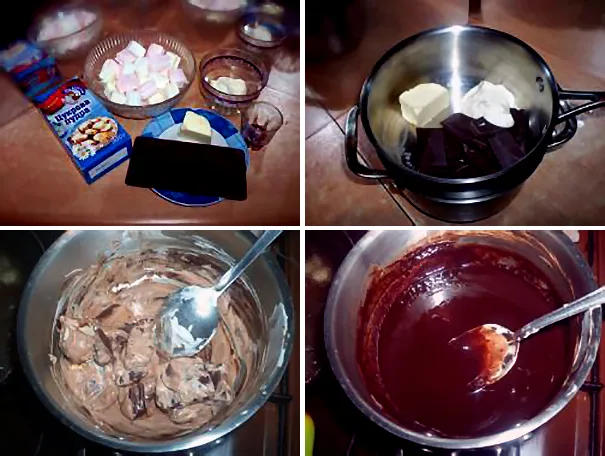
- Жевательные зефирки следует растопить на водяной бане или в микроволновой печи. То же самое делаем и с шоколадом, добавив к нему одну чайную ложку сливочного масла.
Полезно знать!
Жидкость поможет сделать ингредиенты не такими липкими и не даст им приклеиться к стенкам посуды после плавления. Поэтому перед процедурой стоит добавить к зефирным конфетам две чайных ложки воды, а к шоколаду – одну.
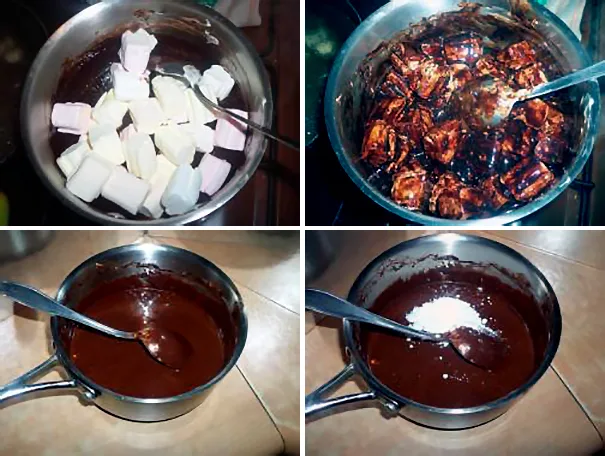
Сахарную пудру нужно высыпать в широкую и глубокую посуду, добавив туда мягкие маршмеллоу и тщательно размешанный расплавленный шоколад. Можно приступать к замешиванию. Опытные хозяйки советуют использовать для этих целей миксер со спиральными венчиками, так как обычные с задачей не справятся – масса получается очень вязкой.
Это важно!
«Готовые» маршмеллоу после плавления на водяной бане или в микроволновой печи должны увеличиться в размере приблизительно в два раза. Если этого не произошло, лучше использовать другую марку зефира.
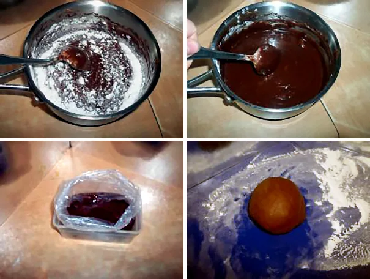
После доведения массы до однородного состояния отправляйте ее на рабочую поверхность, предварительно присыпанную крахмалом или сахарной пудрой, и приступайте к вымешиванию мастики. Можно использовать силиконовый коврик, чтобы паста не так прилипала к рукам.- Когда шоколадная мастика для покрытия торта будет вымешана, запаковываем ее в пищевую пленку или целлофановый пакет без доступа воздуха и ставим в холодильник на 7-8 часов. Перед использованием тугой комок шокомастики следует немного разморозить при комнатной температуре.
Идеальный тандем – шоколад и мед
Более универсальной в плане украшения десертов считается шоколадная мастика с медом. Ею можно обтягивать десерты, из нее – вылепливать пчелок и другие фигурки, создавать флористические шедевры и даже плести сладкие корзинки.
Ингредиенты, которые вам понадобятся:
- шоколад – 300 г;
- мед – 60 г.
Это важно!
Для темного шоколада лучше использовать жидкий мед, для белого подойдет и жидкий, и густой.
Шоколадная мастика для цветов готовится так:
- Шоколад и мед нужно расплавить на водяной бане, вымешать получившуюся массу ложкой, а потом руками до однородности. «Готовая» паста должна быть густой и тягучей.
Интересно!
Как определить готовность мастики? Скатайте из небольшого кусочка шарик и расплющьте его пальцами. Края шарика не должны порваться.
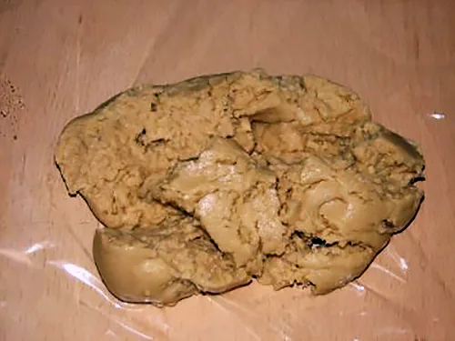
Затем нужно разделить получившуюся шоколадно-медовую массу на небольшие кусочки, завернуть их в пищевую пленку, дать полежать, затвердеть и окрепнуть. После чего можно приступать к лепке кулинарных шедевров из приготовленного комка.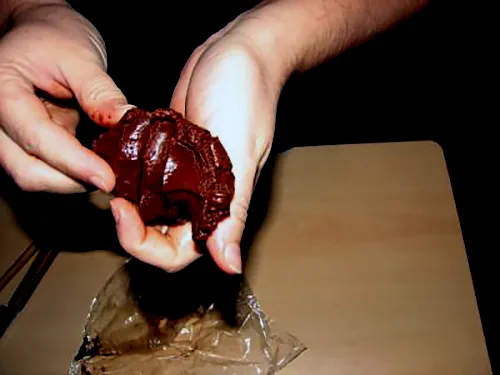
Предварительно нужно размягчить кусочек в микроволновке (в течение 30 секунд) и отжать с него всю выделившуюся жидкость (масло). Потом снова отправить в микроволновую печь, уже секунд на 10.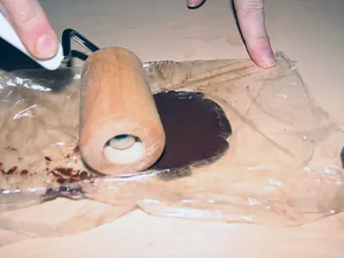
Завернуть в пищевую пленку и раскатать кусочек прямо в ней, придав ему нужную форму и толщину.
Этот вид мастики лучше держать подальше от тепла, но и в холодильник его ставить не стоит. Негативно на ней сказывается также и хранение в условиях повышенной влажности: мастичная масса просто раскиснет и станет непригодной для дальнейшего использования.
Мастика из какао
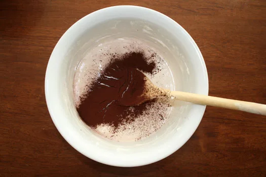
Отдельного упоминания требует и шоколадная мастика из какао. Такая масса делается по классическому рецепту из маршмеллоу, но в нее дополнительно добавляется какао для окрашивания и вкуса. Порошок следует добавить в пасту из предварительно растопленного на водяной бане или в СВЧ жевательного зефира со сливочным маслом, молоком и лимонным соком. После чего нужно ввести смесь в просеянный сахарный песок и крахмал. Тщательно вымешать ложкой и руками. На выходе получится коричнево-шоколадная масса.
Белоснежная мастика
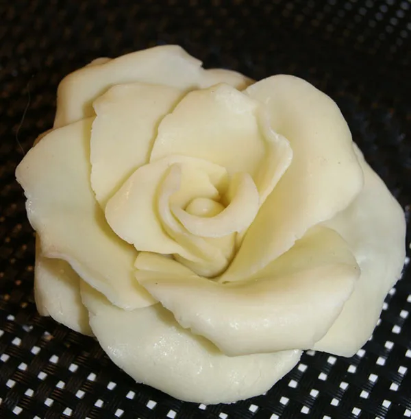
Рецепт мастики из белого шоколада также легок в реализации, как и вышеперечисленные. Для него будут нужны:
- белый шоколад – 100 г;
- кукурузная глюкоза – 2 столовых ложки.
Идеальная шоколадная мастика для лепки цветочков, бантиков и других незамысловатых фигурок готовится так:
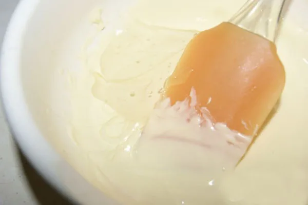
- Плитку шоколада нужно поломать, кусочки сложить в небольшую емкость и поставить на водяную баню. Также можно использовать СВЧ.
Важно!
Сладость следует растопить до однородной консистенции. Но не перегрейте шоколад, иначе он свернется и станет непригодным для дальнейших манипуляций.
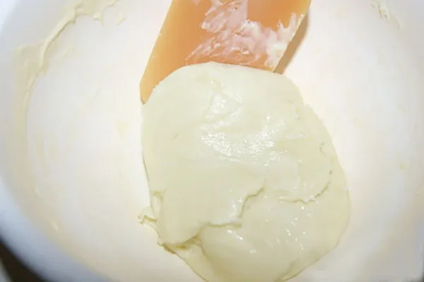
Добавьте глюкозу и размешайте до густоты, чтобы масса отходила от стенок миски.
Совет!
Вымешивайте массу быстро и недолго, чтобы шоколад не выделил масло. Если же это уже случилось, отожмите мастику руками.
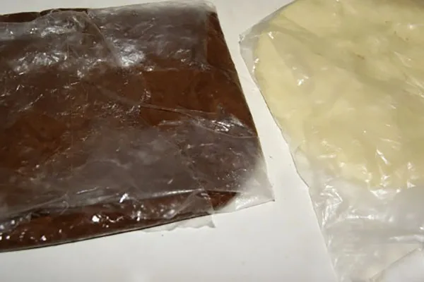
Заверните массу в пищевую пленку и дайте ей полежать в холодильнике ночью. За это время она окрепнет, шоколад застынет, и мастику можно будет использовать для лепки.- Перед тем как приступать к работе с эластичной массой, достаньте ее из холодильника, дайте нагреться до комнатной температуры (хватит 30 минут) и хорошо вымешайте еще раз. Работайте в перчатках, чтобы шоколад не таял.
В процессе лепки каждую изготовленную деталь лучше отправлять в холодильник, пока вы создаете другие, особенно если в комнате жарко. Так она сохранит форму и не слипнется с прочими частями декора. Когда шоколад для моделирования, а именно так еще называют эту мастику, застынет, он станет крепким, но при этом и хрупким.
Транспортировать торты с такими украшениями нужно осторожно. Сами фигурки храните в закрытом контейнере до их непосредственной установки перед подачей десерта.
Это важно!
Не используйте для этого рецепта аптечную глюкозу – у нее другая консистенция, поэтому масса будет испорчена. Кондитерская глюкоза по плотности похожа на мед – она прозрачная и тягучая. Если у вас ее нет, лучше просто выбрать другой рецепт мастики.
Как окрасить шоколадную массу
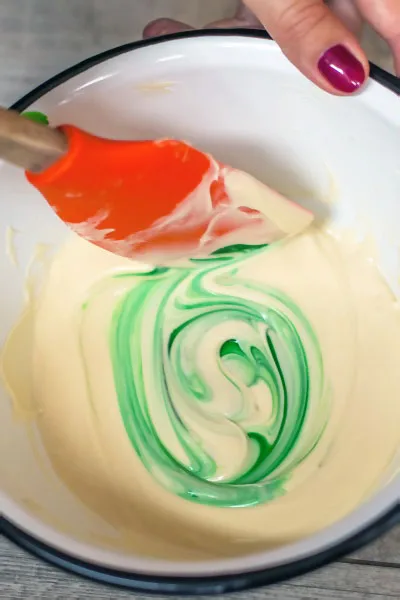
Приготовленный белый шоколад для моделирования можно окрасить в нужный цвет, но для этого подойдут особые красители – жирорастворимые или масляные. Ни в коем случае нельзя использовать красители на водной основе. Можно поэкспериментировать с сухими или гелевыми красителями, но результат будет непредсказуемым. Пигмент добавляйте к растопленному шоколаду.
Процесс окрашивания шоколада гелевыми красителями на видео: